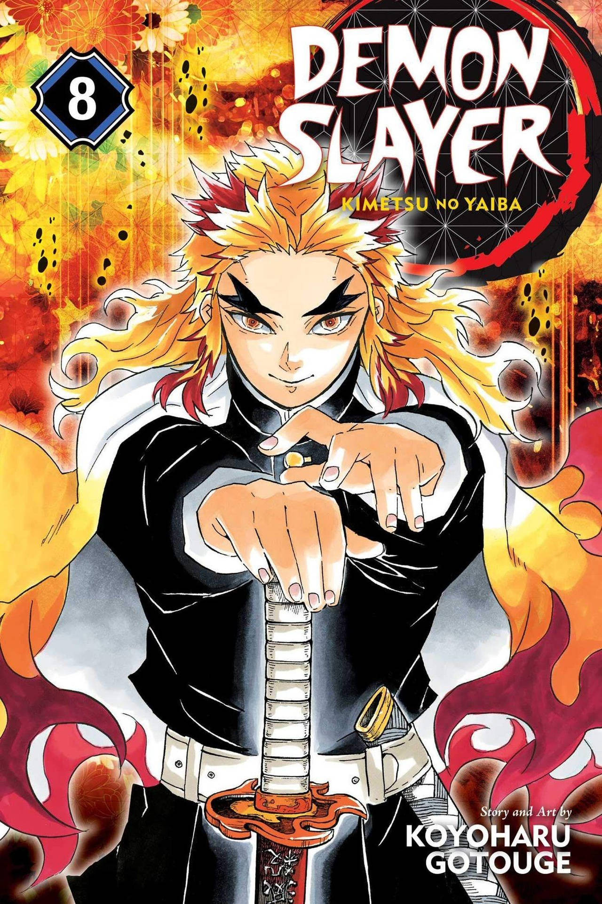
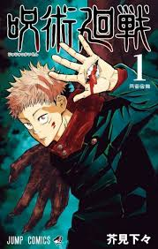

Kimetsu no Yaiba
Para mais informações sobre a obra, acesse este link.

One Piece
Para mais informações sobre a obra, acesse este link.

Jujutsu Kaisen
Para mais informações sobre a obra, acesse este link.